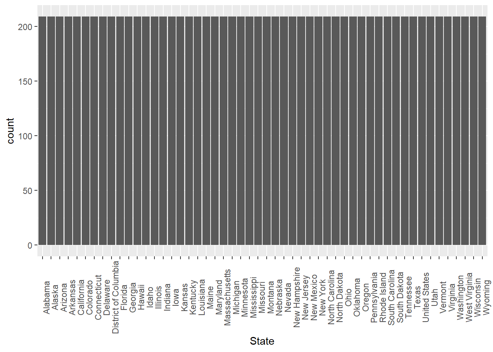
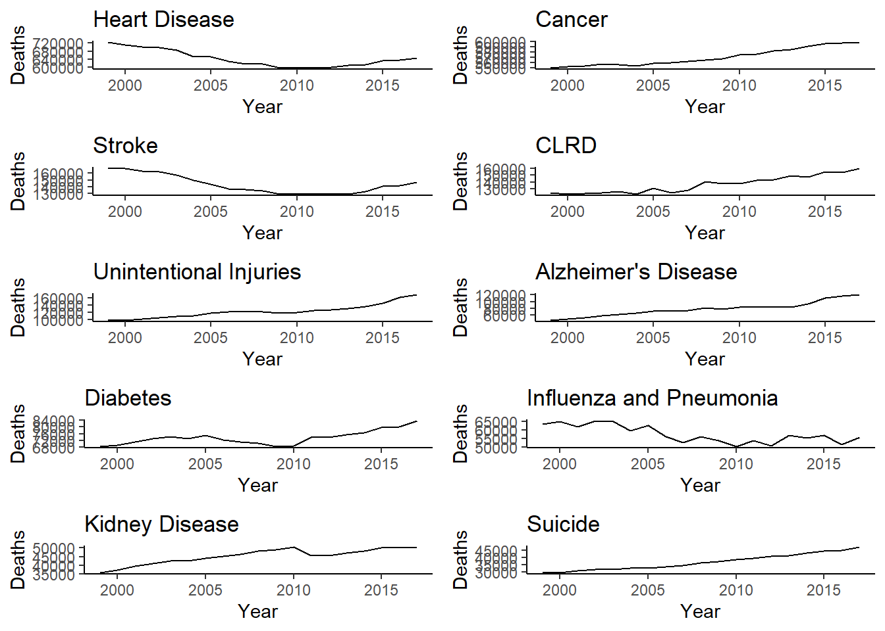
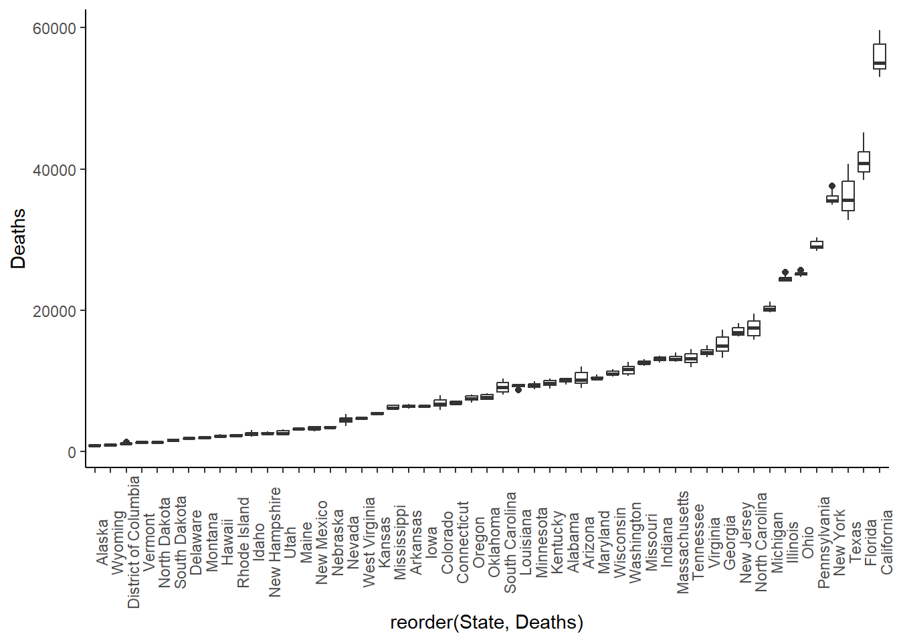

library(tidyverse)
library(dplyr)
library(ggplot2)
library(here)
library(gridExtra)CDC Data Exercise
For this exercise, the dataset I’ll be working on is called the NCHS - Leading causes of Death: United States. In summary, this dataset presents the age-adjust death rates for the 10 leading causes of death in the United States since 1999.
Published by the National Center for Health Statistics, the dataset is described as follows:
“Data are based on information from all resident death certificates filed in the 50 states and the District of Columbia using demographic and medical characteristics. Age-adjusted death rates (per 100,000 population) are based on the 2000 U.S. standard population. Populations used for computing death rates after 2010 are postcensal estimates based on the 2010 census, estimated as of July 1, 2010. Rates for census years are based on populations enumerated in the corresponding censuses. Rates for non-census years before 2010 are revised using updated intercensal population estimates and may differ from rates previously published.
Causes of death classified by the International Classification of Diseases, Tenth Revision (ICD–10) are ranked according to the number of deaths assigned to rankable causes. Cause of death statistics are based on the underlying cause of death.”
Load Libraries
Load Data
raw_data <- read.csv2(here("cdcdata-exercise", "NCHS_-_Leading_Causes_of_Death__United_States_20260209.csv"), sep = ",")Check Data
nrow(raw_data) #counting rows = counting entries[1] 10868ncol(raw_data) #counting columns = counting variables[1] 6str(raw_data) #check structure'data.frame': 10868 obs. of 6 variables:
$ Year : int 2012 2017 2016 2013 2000 2014 2009 2015 2014 2011 ...
$ X113.Cause.Name : chr "Nephritis, nephrotic syndrome and nephrosis (N00-N07,N17-N19,N25-N27)" "Nephritis, nephrotic syndrome and nephrosis (N00-N07,N17-N19,N25-N27)" "Nephritis, nephrotic syndrome and nephrosis (N00-N07,N17-N19,N25-N27)" "Nephritis, nephrotic syndrome and nephrosis (N00-N07,N17-N19,N25-N27)" ...
$ Cause.Name : chr "Kidney disease" "Kidney disease" "Kidney disease" "Kidney disease" ...
$ State : chr "Vermont" "Vermont" "Vermont" "Vermont" ...
$ Deaths : chr "21" "29" "30" "30" ...
$ Age.adjusted.Death.Rate: chr "2.6" "3.3" "3.7" "3.8" ...head(raw_data) #check top of data Year X113.Cause.Name
1 2012 Nephritis, nephrotic syndrome and nephrosis (N00-N07,N17-N19,N25-N27)
2 2017 Nephritis, nephrotic syndrome and nephrosis (N00-N07,N17-N19,N25-N27)
3 2016 Nephritis, nephrotic syndrome and nephrosis (N00-N07,N17-N19,N25-N27)
4 2013 Nephritis, nephrotic syndrome and nephrosis (N00-N07,N17-N19,N25-N27)
5 2000 Intentional self-harm (suicide) (*U03,X60-X84,Y87.0)
6 2014 Nephritis, nephrotic syndrome and nephrosis (N00-N07,N17-N19,N25-N27)
Cause.Name State Deaths Age.adjusted.Death.Rate
1 Kidney disease Vermont 21 2.6
2 Kidney disease Vermont 29 3.3
3 Kidney disease Vermont 30 3.7
4 Kidney disease Vermont 30 3.8
5 Suicide District of Columbia 23 3.8
6 Kidney disease Arizona 325 4.1tail(raw_data) #check bottom of data Year X113.Cause.Name Cause.Name State Deaths
10863 1999 All Causes All causes Mississippi 28,185
10864 2001 All Causes All causes District of Columbia 5,951
10865 2002 All Causes All causes Mississippi 28,853
10866 2000 All Causes All causes Mississippi 28,654
10867 2000 All Causes All causes District of Columbia 6,001
10868 1999 All Causes All causes District of Columbia 6,076
Age.adjusted.Death.Rate
10863 1,043.4
10864 1,049.9
10865 1,051.6
10866 1,051.9
10867 1,061.2
10868 1,087.3colSums(is.na(raw_data)) #check for missing data Year X113.Cause.Name Cause.Name
0 0 0
State Deaths Age.adjusted.Death.Rate
0 0 0 unique(raw_data$Year) [1] 2012 2017 2016 2013 2000 2014 2009 2015 2011 2001 1999 2006 2002 2003 2008
[16] 2005 2004 2007 2010unique(raw_data$State) [1] "Vermont" "District of Columbia" "Arizona"
[4] "South Dakota" "Washington" "Iowa"
[7] "New York" "Massachusetts" "New Jersey"
[10] "North Dakota" "California" "Rhode Island"
[13] "Oregon" "Alaska" "Wyoming"
[16] "Idaho" "Connecticut" "Minnesota"
[19] "Illinois" "Montana" "New Hampshire"
[22] "Hawaii" "Maryland" "Colorado"
[25] "Florida" "Nevada" "Delaware"
[28] "Utah" "Nebraska" "Ohio"
[31] "New Mexico" "Michigan" "Maine"
[34] "Oklahoma" "Pennsylvania" "Texas"
[37] "Tennessee" "Georgia" "Louisiana"
[40] "United States" "Indiana" "Mississippi"
[43] "South Carolina" "Virginia" "Kansas"
[46] "Wisconsin" "North Carolina" "Alabama"
[49] "Kentucky" "Missouri" "West Virginia"
[52] "Arkansas" unique(raw_data$Cause.Name) [1] "Kidney disease" "Suicide"
[3] "Influenza and pneumonia" "Alzheimer's disease"
[5] "Diabetes" "CLRD"
[7] "Unintentional injuries" "Stroke"
[9] "Heart disease" "Cancer"
[11] "All causes" unique(raw_data$X113.Cause.Name) [1] "Nephritis, nephrotic syndrome and nephrosis (N00-N07,N17-N19,N25-N27)"
[2] "Intentional self-harm (suicide) (*U03,X60-X84,Y87.0)"
[3] "Influenza and pneumonia (J09-J18)"
[4] "Alzheimer's disease (G30)"
[5] "Diabetes mellitus (E10-E14)"
[6] "Chronic lower respiratory diseases (J40-J47)"
[7] "Accidents (unintentional injuries) (V01-X59,Y85-Y86)"
[8] "Cerebrovascular diseases (I60-I69)"
[9] "Diseases of heart (I00-I09,I11,I13,I20-I51)"
[10] "Malignant neoplasms (C00-C97)"
[11] "All Causes" ggplot(raw_data, aes(x = State)) +
geom_bar()+
theme(axis.text.x = element_text(angle = 90))
From checking the data, here’s what stood out to me:
1. Variables “Deaths” and “Age.adjusted.Death.Rate” are numbers but are stored as characters (I assume) because of commas.
2. Fortunately, the dataset doesn’t appear to have missing data.
3. Year only runs from 1999 to 2017.
4. 52 states are listed because in addition to the 50 states, the variable State also contains “District of Columbia” and “United States. At the very least, the dataset is consistent that the entries for each state is equal based on the figure.”
5. It seems like there are two variables that describe the same thing: cause of death. It’s just that one is more simplified than the other.
Clean Data
#Duplicating dataframe to clean up
clean_data <- raw_data
#converting variables "Deaths" and "Age.adjusted.Death.Rate" into integer and numerical variables
#Using gsub to remove the commas
clean_data$Deaths <- as.integer(gsub(",", "", clean_data$Deaths))
clean_data$Age.adjusted.Death.Rate <- as.numeric(gsub(",", "", clean_data$Age.adjusted.Death.Rate))Exploratory Data Analysis
#Let's see how each cause of death did throughout the years
clean_data %>%
group_by(Cause.Name) %>%
filter(State == "United States") %>%
summarise(total_deaths = sum(Deaths)) %>%
arrange(desc(total_deaths))# A tibble: 11 × 2
Cause.Name total_deaths
<chr> <int>
1 All causes 47728569
2 Heart disease 12222640
3 Cancer 10843644
4 Stroke 2726523
5 CLRD 2594927
6 Unintentional injuries 2347820
7 Alzheimer's disease 1494816
8 Diabetes 1399943
9 Influenza and pneumonia 1094641
10 Kidney disease 858613
11 Suicide 697016P1 <- clean_data %>%
filter(State == "United States") %>%
filter(Cause.Name == "Heart disease") %>%
ggplot(aes(x = Year, y = Deaths)) +
geom_line()+
theme_classic()+
labs(title = "Heart Disease")
P2 <- clean_data %>%
filter(State == "United States") %>%
filter(Cause.Name == "Cancer") %>%
ggplot(aes(x = Year, y = Deaths)) +
geom_line()+
theme_classic()+
labs(title = "Cancer")
P3 <- clean_data %>%
filter(State == "United States") %>%
filter(Cause.Name == "Stroke") %>%
ggplot(aes(x = Year, y = Deaths)) +
geom_line()+
theme_classic()+
labs(title = "Stroke")
P4 <- clean_data %>%
filter(State == "United States") %>%
filter(Cause.Name == "CLRD") %>%
ggplot(aes(x = Year, y = Deaths)) +
geom_line()+
theme_classic()+
labs(title = "CLRD")
P5 <- clean_data %>%
filter(State == "United States") %>%
filter(Cause.Name == "Unintentional injuries") %>%
ggplot(aes(x = Year, y = Deaths)) +
geom_line()+
theme_classic()+
labs(title = "Unintentional Injuries")
P6 <- clean_data %>%
filter(State == "United States") %>%
filter(Cause.Name == "Alzheimer's disease") %>%
ggplot(aes(x = Year, y = Deaths)) +
geom_line()+
theme_classic()+
labs(title = "Alzheimer's Disease")
P7 <- clean_data %>%
filter(State == "United States") %>%
filter(Cause.Name == "Diabetes") %>%
ggplot(aes(x = Year, y = Deaths)) +
geom_line()+
theme_classic()+
labs(title = "Diabetes")
P8 <- clean_data %>%
filter(State == "United States") %>%
filter(Cause.Name == "Influenza and pneumonia") %>%
ggplot(aes(x = Year, y = Deaths)) +
geom_line()+
theme_classic()+
labs(title = "Influenza and Pneumonia")
P9 <- clean_data %>%
filter(State == "United States") %>%
filter(Cause.Name == "Kidney disease") %>%
ggplot(aes(x = Year, y = Deaths)) +
geom_line()+
theme_classic()+
labs(title = "Kidney Disease")
P10 <- clean_data %>%
filter(State == "United States") %>%
filter(Cause.Name == "Suicide") %>%
ggplot(aes(x = Year, y = Deaths)) +
geom_line()+
theme_classic()+
labs(title = "Suicide")
grid.arrange(P1, P2, P3, P4, P5, P6, P7, P8, P9, P10, ncol = 2, nrow = 5)
#Let's see how they all did when graphed together.
clean_data %>%
filter(State == "United States") %>%
filter(!Cause.Name == "All causes") %>%
ggplot(aes(x = Year, y = Deaths, group = Cause.Name, color = Cause.Name)) +
geom_line()+
theme_classic()
#Being in Georgia, let's see the top causes of death in Georgia and see if the order would match the order seen when looking across the whole country.
clean_data %>%
group_by(Cause.Name) %>%
filter(State == "Georgia") %>%
summarise(total_deaths = sum(Deaths)) %>%
arrange(desc(total_deaths))# A tibble: 11 × 2
Cause.Name total_deaths
<chr> <int>
1 All causes 1342156
2 Heart disease 320627
3 Cancer 288055
4 Stroke 76839
5 Unintentional injuries 72052
6 CLRD 70638
7 Alzheimer's disease 40922
8 Diabetes 34811
9 Kidney disease 30459
10 Influenza and pneumonia 29096
11 Suicide 20610From our exploratory data analysis, these are what stood out to me:
A couple of causes of death, like heart disease and stroke, actually dipped toward 2010 and slowly climbed back up.
On the other hand, few other causes of death steadily increased across time (e.g., cancer, unintentional injuries, CLRD, Alzheimer’s, suicide.
Looking at them all together, we get a better sense of how vast the difference is in the deaths caused by heart disease and cancer compared to all other causes of death.
When looking at Georgia compared to the national perspective:
- unintentional injuries were more prevalent than CLRD,
- kidney diseases were more prevalent than influenza and pneumonia.
Specific Questions 1. Which states have the highest and lowest death rates from cancer?
clean_data %>%
filter(Cause.Name == "Cancer") %>%
ggplot(aes(x = reorder(State, Age.adjusted.Death.Rate), y = Age.adjusted.Death.Rate)) +
geom_boxplot()+
theme_classic()+
theme(axis.text.x = element_text(angle = 90))
clean_data %>%
filter(!State == "United States") %>%
filter(Cause.Name == "Cancer") %>%
ggplot(aes(x = reorder(State, Deaths), y = Deaths)) +
geom_boxplot()+
theme_classic()+
theme(axis.text.x = element_text(angle = 90))
It’s interesting to see conclusions based on looking at more than one variable. For example, just by looking at the number of deaths due to cancer, we see that California has the highest number of deaths due to cancer than other states. However, if we look at the death rates, California actually ranks really low. In fact, the top three states with the most deaths due to cancer (California, Florida, Texas), are actually on the bottom half when looking at death rates. In fact, let’s take a look at numbers for death rates in cancer across states.
#mean deaths and death rates by State
clean_data %>%
group_by(State) %>%
summarise(
avg_death_rate = mean(Age.adjusted.Death.Rate),
avg_deaths = mean(Deaths)) %>%
print(n=52)# A tibble: 52 × 3
State avg_death_rate avg_deaths
<chr> <dbl> <dbl>
1 Alabama 153. 7672.
2 Alaska 123. 564.
3 Arizona 117. 7524.
4 Arkansas 148. 4725.
5 California 112. 39089.
6 Colorado 113. 4973.
7 Connecticut 111. 4694.
8 Delaware 128. 1220.
9 District of Columbia 137. 808.
10 Florida 116. 28078.
11 Georgia 138. 11130.
12 Hawaii 99.2 1534.
13 Idaho 121. 1797.
14 Illinois 126. 16698.
15 Indiana 138. 9257.
16 Iowa 120. 4567.
17 Kansas 126. 3980.
18 Kentucky 152. 6813.
19 Louisiana 151. 6744.
20 Maine 126. 2074.
21 Maryland 123. 7032.
22 Massachusetts 114. 8671.
23 Michigan 132. 14408.
24 Minnesota 108. 6163.
25 Mississippi 159. 4747.
26 Missouri 138. 9117.
27 Montana 125. 1410.
28 Nebraska 119. 2455.
29 Nevada 134. 3123.
30 New Hampshire 119. 1693.
31 New Jersey 118. 11469.
32 New Mexico 123. 2494.
33 New York 115. 24694.
34 North Carolina 134. 12479.
35 North Dakota 116. 967.
36 Ohio 137. 17781.
37 Oklahoma 152. 5948.
38 Oregon 120. 5091.
39 Pennsylvania 129. 20596.
40 Rhode Island 120. 1568.
41 South Carolina 140. 6530.
42 South Dakota 121. 1168.
43 Tennessee 149. 9628.
44 Texas 128. 26483.
45 United States 126. 401958.
46 Utah 114. 2261.
47 Vermont 119. 858.
48 Virginia 125. 9518.
49 Washington 118. 7823.
50 West Virginia 154. 3454.
51 Wisconsin 120. 7690.
52 Wyoming 127. 695.#mean deaths and death rates by Year
clean_data %>%
group_by(Year) %>%
summarise(
avg_death_rate = mean(Age.adjusted.Death.Rate),
avg_deaths = mean(Deaths))# A tibble: 19 × 3
Year avg_death_rate avg_deaths
<int> <dbl> <dbl>
1 1999 144. 15025.
2 2000 142. 15054.
3 2001 140. 15090.
4 2002 140. 15253.
5 2003 138. 15246.
6 2004 132. 14901.
7 2005 133. 15168.
8 2006 129. 14968.
9 2007 126. 14930.
10 2008 126. 15192.
11 2009 122. 14950.
12 2010 121. 15108.
13 2011 120. 15331.
14 2012 118. 15454.
15 2013 118. 15760.
16 2014 118. 15961.
17 2015 119. 16523.
18 2016 119. 16708.
19 2017 119. 17116.2. Cancer has gone up over the years. How has the death rate been?
P2b <- clean_data %>%
filter(State == "United States") %>%
filter(Cause.Name == "Cancer") %>%
ggplot(aes(x = Year, y = Age.adjusted.Death.Rate)) +
geom_line()+
theme_classic()
grid.arrange(P2, P2b, ncol = 2, nrow = 1)
So despite the number of deaths due to cancer going up, we’ve actually had amazing advances to reduce cancer death rates.